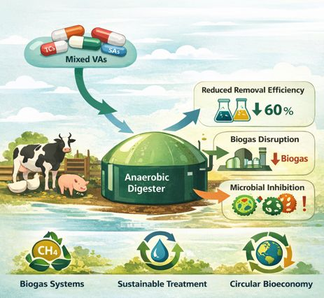
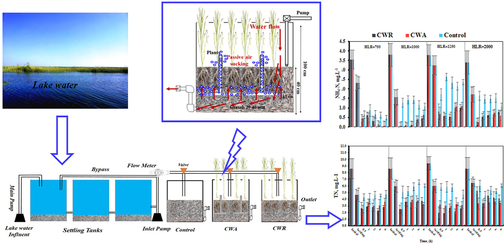

01
Water & wastewater treatment
Environmental process engineering, water quality, treatment performance, and sustainable treatment systems.
My research explores treatment processes and environmental systems that improve water quality, manage emerging contaminants, and recover value from waste streams.
Environmental process engineering, water quality, treatment performance, and sustainable treatment systems.

Fate, transport, and treatment of veterinary antibiotics, PFAS, microplastics, and antibiotic resistance genes.

Biological treatment, anaerobic digestion, biogas and biomass utilization, and contaminant behavior in treatment systems.

Constructed wetlands, floating treatment wetlands, and nature-based approaches for nutrient and pollutant removal.

Watershed and treatment-system modeling, spatial analysis, machine learning, and data-driven optimization.

Waste-to-resource strategies and sustainable approaches connecting water, energy, and materials.
The 14th International Symposium on Biogeochemistry of Wetlands & Aquatic Systems
Engineering With Nature (EWN) Partner Symposium
2022 Forum on Renewable Energy Promotion in Developing Countries
The 13th Japan-China-Korea International Postgraduate Academic Symposium
International Symposium on Rural Organic Pollution Prevention and Eco-Environment Protection
21st Conference of the Egyptian Society of Agricultural Engineering
6th International Symposium on Wetland Pollutant Dynamics & Annual Conference of the Constructed Wetland Association
Society for Risk Analysis–Africa (SRA-Africa) Webinar
Central Michigan University Postgraduate Seminar Series
Central Michigan University School Seminar Series
Multi-institutional Lecture Series (CMU, CAU, NIOF)